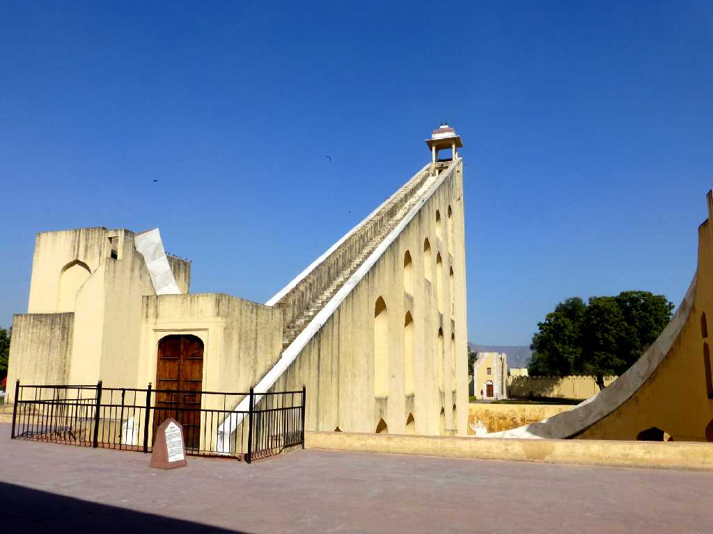
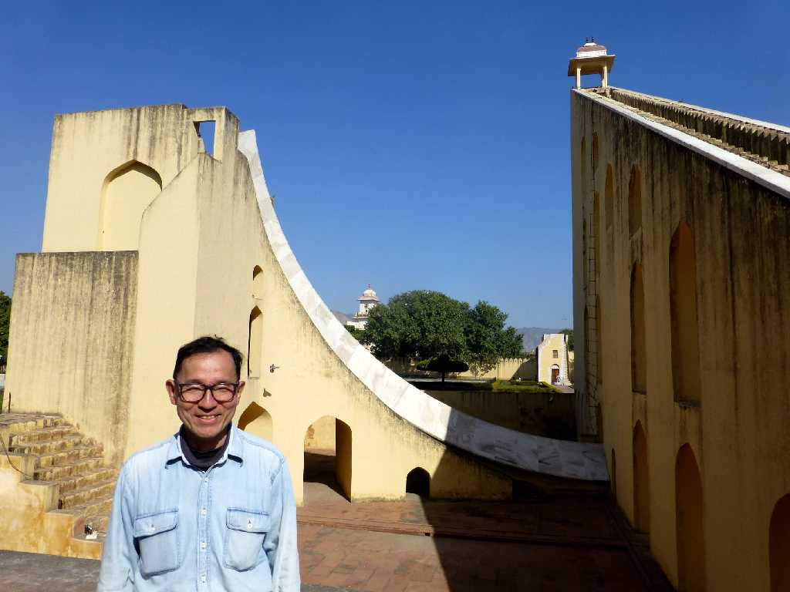
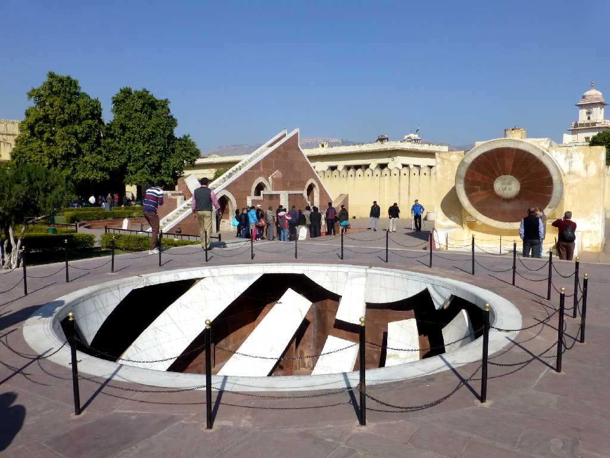

89 feet high 148 feet wide Samrat Yantra Jantar Mantar Jaipur
１７２８年にマハラジャが宮殿内に創った天文台には高さ２７ｍ幅４５ｍの巨大な日時計がある

January 28 2015 Samrat Yantra Jantar Mantar
Accuracy of 2 seconds Samrat Yantra Jantar Mantar
巨大日時計は６ｃｍが１分で２秒の目盛りが刻まれている

Laghu Samrat Yantra Nadi Valaya Yantra
Jai Prakash Yantra